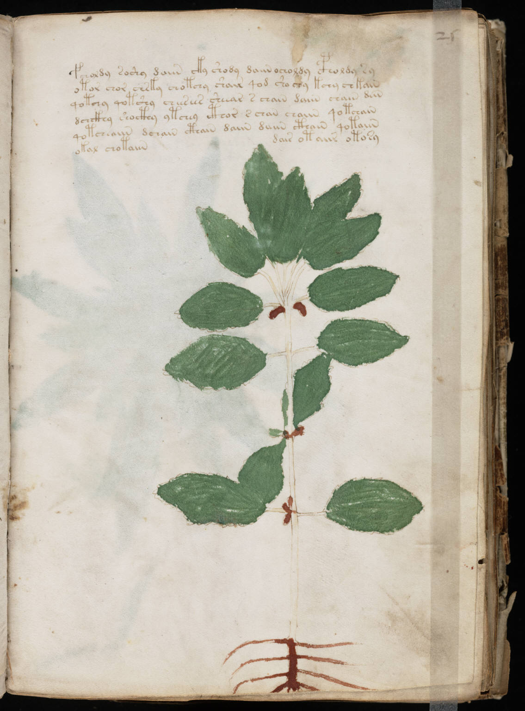

f25r
1fcholdy soshy daiin cky shody daiin ocholdy cpholdy sy2otor chor chrky chotchy shair qod sho chy kchy chkain3qotchy qotshy cheesees sheear s chain daiin chain dein4dchckhy shocthy ytchey cthor s chan chaiin qotchain5qotcheaiin dchain cthain daiin daiin cthain qotaiin6okal chotaiin7dair otaiir otosy
